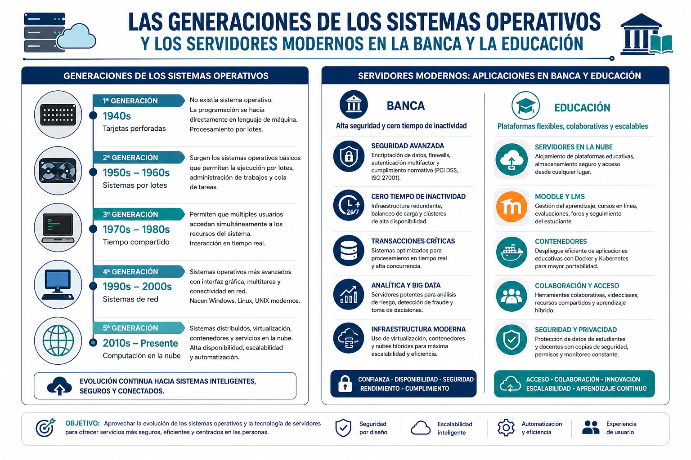

Evolución, Generaciones y Tendencias Actuales de los Sistemas Operativos
Los Sistemas Operativos (SO) han evolucionado drásticamente desde los primeros ordenadores de válvulas hasta las arquitecturas modernas en la nube. Comprender esta evolución nos permite entender cómo operan los entornos tecnológicos actuales.
1. Generaciones de los Sistemas Operativos
- Primera Generación (1940s): Sin sistemas operativos. Las máquinas se programaban directamente mediante paneles de interruptores y tarjetas perforadas con código de máquina.
- Segunda Generación (1950s - Transistores): Nacen los primeros sistemas por lotes (Batch). Los trabajos se agrupaban para ejecutarse secuencialmente sin intervención manual constante.
- Tercera Generación (1960s-1970s - Circuitos Integrados): Se introduce la multiprogramación y el tiempo compartido (Time-Sharing), permitiendo que múltiples usuarios compartieran una misma computadora de forma simultánea. Aparece Unix.
- Cuarta Generación (1980s en adelante - Microprocesadores): Auge de la informática personal (PC), interfaces gráficas de usuario (GUI) y sistemas operativos de red como Windows, macOS y las distribuciones de Linux.
- Quinta Generación (Actualidad - Computación en la Nube y Distribuida): Sistemas operativos orientados a la conectividad global, virtualización masiva, contenedores (Docker/Kubernetes) y la gestión de recursos elásticos en la nube.
2. ¿Qué es lo más nuevo en servidores actualmente?
Hoy en día, la infraestructura de servidores ya no depende únicamente de instalar un SO monolítico sobre una máquina física. Las tendencias más avanzadas se dividen según el sector:
🏦 Sector Bancario y Financiero (Alta Disponibilidad y Seguridad Crítica)
- Sistemas Operativos Hardened (Endurecidos): Distribuciones especializadas de Linux (como Red Hat Enterprise Linux - RHEL o SOs certificados para banca) con políticas de seguridad estrictas que bloquean accesos innecesarios.
- Virtualización Avanzada y Mainframes modernos: Uso de hipervisores de tipo 1 (como IBM z/OS o VMware ESXi) que garantizan cero tiempos de inactividad (zero downtime) y tolerancia a fallos a nivel de hardware y software.
- Procesamiento en Tiempo Real (In-Memory Computing): Sistemas operativos optimizados para manejar millones de transacciones por segundo sin latencia en bases de datos financieras.
🏫 Instituciones Educativas y Universidades (Escalabilidad y Gestión de Aulas Virtuales)
- Servidores basados en Contenedores (Docker / Kubernetes): Permiten desplegar plataformas educativas (como Moodle, portales de notas y laboratorios virtuales) de manera aislada y ligera, adaptándose automáticamente si hay picos de tráfico durante los periodos de matrícula o exámenes.
- Infraestructuras Híbridas y Cloud Computing: Universidades modernas operan con sistemas operativos distribuidos que combinan servidores locales (on-premise) con nubes institucionales (AWS, Azure o Google Cloud) para optimizar costos y garantizar el acceso remoto de los estudiantes.
